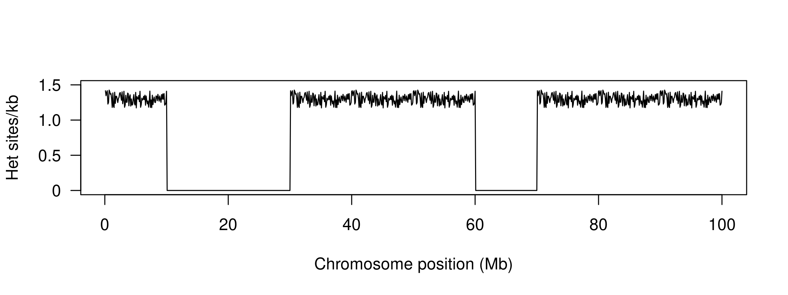
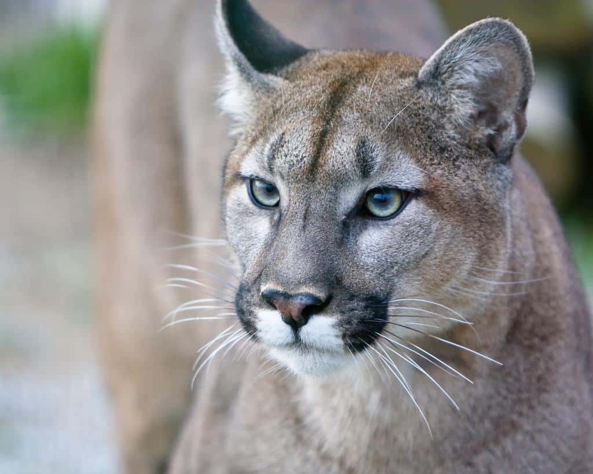
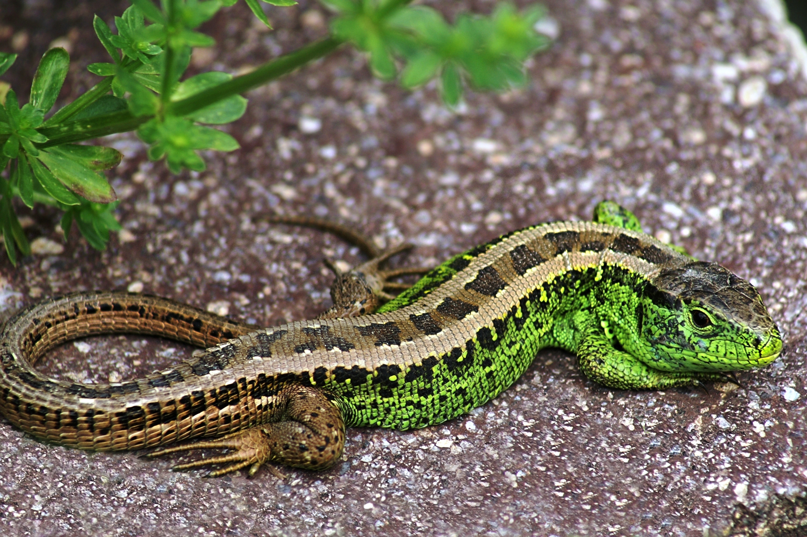
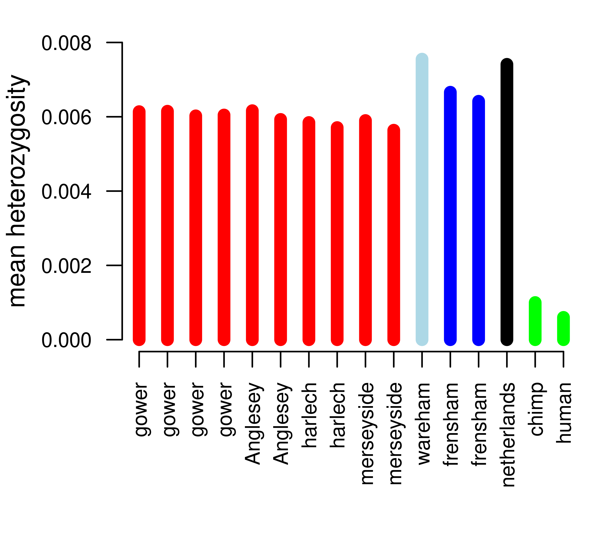
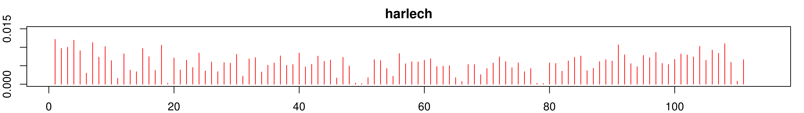
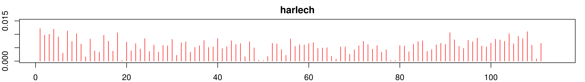

Conservation genetics
BNS-2002: Genes, Development, and Evolution
Dr Axel Barlow
email: a.barlow@bangor.ac.uk
Phylogenetics and population genetics lectures
- Key concepts and Single locus phylogenetics
- Multi-locus phylogenetics
- Population structure
- Conservation genetics
- Theory
- Methods
- Discoveries
3rd year module

Conservation genetics - theory
Conservation genetics
Applied population genetics for the purpose of conservation
- Identifying management units
- Wildlife crime
- Population/ancestry assignment
In this lecture we will look at:
- Measuring loss of genetic diversity
- Caused by drift in small populations
- Measuring inbreeding
- Caused by mating with close relatives
Loss of genetic diversity
Loss of genetic diversity
- At small population sizes this overwhelms the rate of mutation, leading to net loss of diversity
Inbreeding depression
- Low diversity means recessive alleles of functional genes exposed in an increasingly homozygous state
- Deleterious alleles tend to be recessive
- For some loci, heterozygotes have higher fitness, can also be disrupted
Reduced evolutionary potential
- Selection acts on variants in the population drivig adaptation
- Unpredictable because we don't know the future precisely (disease, climate change, etc)
Example: adders
- Population in Sweden
- Isolated > 100 years
- Population decline, deformed/stillborn offspring, low genetic diversity
- inbreeding depression


Example: adders

Genetic rescue
- 20 males from other (large) populations released
- Left for 4 years
- Remaining 8 males returned to source population
- Dramatic increase in recruitment
- Increase in genetic diversity
- Reduction in stillborn offspring
Adders background reading
Inbreeding
- Mating between close relatives
- Not necessarily preferrential
- Becomes unavoidable in small populations
- Basically a form of drift
- Reduces diversity and evolutionary potential
- Effect on genome is more severe, and manifests in a single generation
Inbreeding

Conservation genetics - methods
Data
Measuring diversity
- Many methods
- Heterozygosity is simple and often used
- Note across a large number of loci, heterozosity is same for all individuals in a populaiton (HWE)
Getting data
- Traditionally a small number of markers (e.g. microsatellites) were used
- These would be selected based on being variable in the study population(s)
- Tends to overestimate diversity (circular reasoning)
- Things get unpredictable when applied to other populations/species
- Makes comparisons between species difficult to impossible
Shotgun whole genome sequencing

Multispecies comparisons

Barnett et al. 2020. Current Biology
Measuring inbreeding
- In theory can be calculated from know pedigrees (e.g. "pedigree" pets)
- Genetic approaches shown to be much more accurate
- Plus knowledge of pedigree not required
- In particular, genome sequencing allows identification of runs of homozygosity (ROH)

Conservation genetics - discoveries
IUCN designation and diversity poorly correlated

IUCN designation reading
White rhinos (Ceratotherium simum)
- Two subspecies: northern and southern
- ~20,000 southern white rhinos (in 2015)
- Northern white rhino functionally extinct (2 females left in 2018)

.jpg)

White rhinos (Ceratotherium simum)

White rhinos background reading
Pumas (Puma concolor)
- Puma/cougar/mountain lion/panther
- Widespread across North and South America
- IUCN listed as least concern
- But some populations are small and isolated
- E.g. Florida panther listed as critically endangered
- 8 females introduced from Texas to reduce inbreeding

Pumas (Puma concolor)

Pumas (Puma concolor)

Pumas (Puma concolor)

Pumas background reading
Isle Royale wolves
- Colonised 2-3 wolves in 1940s
- Expanded to 50 individuals
- Crashed to 14 individuals in 1908s
- Notable improvement 1997 with migration of a single male, followed by second crash
- Moose increased in this period
- 2 wolves left in 2018: father-daughter and half sibs


Isle Royale wolves

Wolf reading
Sand lizards, UK
- UK's rarest lizard
- Highly protected
- Historically widespread in coastal and southern areas
- Extinct in Wales by 1960's
- Multiple reintroductions
- Descendents of Merseyside dune race

Mean heterozygosity

ROHs source and introduced populations
 

Revision
- lecture material
- Relevant chapters in course textbooks (phylogenetics, population structure and conservation genetics)
- Overview of some of the discussed studies (plus any others you find)
- Example exam questions to follow
Thank you!